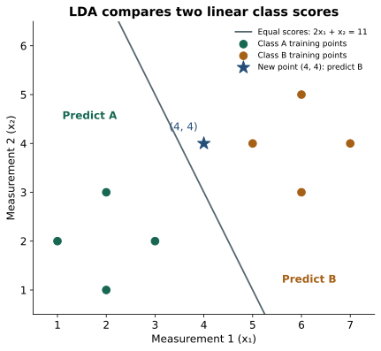
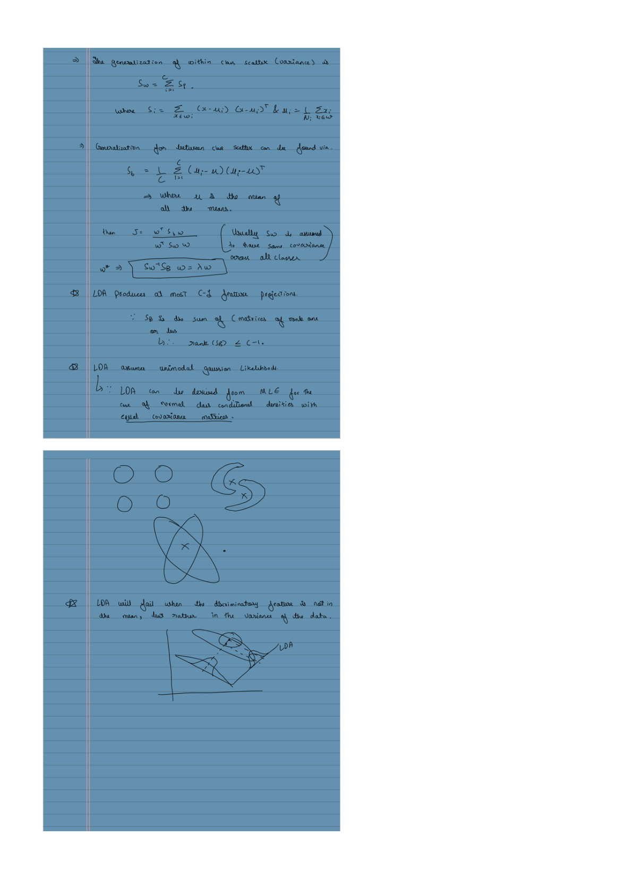

LDA Classification: From Class Distributions to a Prediction
Classification follow-up to PCA and LDA.pdf · View a handwritten page
Suppose a new observation has measurements $(4,4)$. Should we call it class A or class B? Linear discriminant analysis (LDA) answers by comparing how well each class explains those measurements, while also accounting for how common each class is.
We will use the same small dataset throughout: find the two class centers, measure the spread around them, and calculate a prediction for $(4,4)$. The formulas use numbers introduced beside them. The Fisher LDA guide covers choosing a projection direction; you do not need that derivation to follow this classifier example.
Start with two measurements and a class label
Each row below is one training observation. The two numbers $x_1$ and $x_2$ are its measurements, and the label tells us whether it belongs to A or B. We use these eight rows to fit the model. The new point $(4,4)$ is held out of that calculation.
| Point | Class | $x_1$ | $x_2$ |
|---|---|---|---|
| A1 | A | 1 | 2 |
| A2 | A | 3 | 2 |
| A3 | A | 2 | 1 |
| A4 | A | 2 | 3 |
| B1 | B | 5 | 4 |
| B2 | B | 7 | 4 |
| B3 | B | 6 | 3 |
| B4 | B | 6 | 5 |
What does the LDA classifier assume?
Imagine the observations from each class as a cloud around an average point. LDA models each cloud as Gaussian, meaning a bell-shaped distribution. The centers may differ, but the model gives the clouds the same spread and orientation.
| Name and symbol | What it tells us |
|---|---|
| Class mean $\mu_c$ | The average point in class $c$. For two measurements, it contains two averages. |
| Shared covariance $\Sigma$ | How much measurements vary around their own class mean, and whether their differences move together. |
| Class prior $\pi_c$ | How common class $c$ is before we examine a new point's measurements. |
Here $c$ is a class label, A or B. The compact notation for the Gaussian assumption is:
Read this as "the measurements $x$, given class $c$, follow a Gaussian with that class's center and the shared covariance." A shared covariance can describe tilted ellipses as well as round clouds; it does not require independent measurements. The Gaussian assumption belongs to this probability model, not to the Fisher projection calculation.
Estimate the class means and priors
For class A, average each measurement over its four rows:
For B, the same calculation gives:
We estimate each prior from the fraction of training rows in that class. There are four A rows and four B rows out of eight, so both priors are $4/8=0.5$. Before looking at the new measurements, this fitted model gives the classes equal weight.
| Class | Rows | Mean $\mu_c$ | Prior $\pi_c$ |
|---|---|---|---|
| A | 4 | (2, 2) | 4/8 = 0.5 |
| B | 4 | (6, 4) | 4/8 = 0.5 |
Estimate the shared covariance
Spread means variation around a class's own center. Use A's center $(2,2)$ for A points and B's center $(6,4)$ for B points. Subtracting the overall average would mix the gap between classes into their internal spread.
| Point | Difference from center | Squared differences |
|---|---|---|
| A1: (1, 2) | $(1-2,2-2)=(-1,0)$ | (1, 0) |
| A2: (3, 2) | $(3-2,2-2)=(1,0)$ | (1, 0) |
| A3: (2, 1) | $(2-2,1-2)=(0,-1)$ | (0, 1) |
| A4: (2, 3) | $(2-2,3-2)=(0,1)$ | (0, 1) |
| Sum of squared differences | (2, 2) | |
B has the same four offsets around its center $(6,4)$, so its squared differences also sum to $(2,2)$. Across both classes, each measurement therefore contributes $2+2=4$. Dividing by the eight training rows gives variance $4/8=0.5$ for each measurement.
Covariance records products between the two differences. Every offset here has a zero coordinate, so all those products are zero. The shared covariance matrix is a compact way to store the two variances and that zero covariance:
The diagonal 0.5 values are the variances. The off-diagonal zeros mean this fitted model has no within-class co-variation between the measurements. Other datasets can have nonzero off-diagonal entries.
Optional: the general covariance formula and the denominator convention
For $n$ training rows, $\hat\mu_c$ is the fitted mean of class $c$. The maximum-likelihood shared covariance adds outer products of deviations from each point's own class mean, then divides by $n$:
The numerator is called total within-class scatter, $S_W$, so $\hat\Sigma=S_W/n$. Here $n=8$. An unbiased pooled estimate instead divides by $n-C=6$ for $C=2$ classes. That gives a different covariance and different probability estimates; the worked calculation and Python code both use the maximum-likelihood version.
The full Gaussian density requires positive-definite covariance, meaning no nonzero direction has zero variance. Our diagonal matrix with two positive 0.5 entries meets that condition. Its inverse is $2I$, where $I$ is the identity matrix.
Turn the fitted distributions into class probabilities
The values used in this section are A's center $(2,2)$, B's center $(6,4)$, variance 0.5 in each measurement, zero covariance between measurements, and priors 0.5 each. Both class clouds have the same spread.
The likelihood $p(x\mid c)$ is the Gaussian cloud's fit value, or density, at measurements $x$. It is not yet the probability that $x$ belongs to class $c$. Multiply it by that class's prior $\pi_c$ to get a relative class weight. Bayes' rule divides that weight by the total weight of all classes:
$c$ is the class we are asking about, such as B. The $k$ inside the sum is just the class label used while adding terms: first A, then B. It is not a measurement index or a count of observations.
Even when we ask about B, the denominator includes both A and B. With our equal priors, $\pi_A=\pi_B=0.5$:
The resulting probabilities add to 1. They are called posterior probabilities: the class probabilities after we have seen the measurements. With equal costs for mistakes, predict the class with the largest one. For $C$ classes labeled $1,\ldots,C$, the sum would contain one term for each of those labels.
For this example's covariance, the likelihood has a particularly simple form. Define the squared distance from class $c$'s center as:
Here $\mu_{c1}$ and $\mu_{c2}$ are the two entries of that class's center. With our variance 0.5 in each measurement and zero covariance, the Gaussian likelihood is proportional to $e^{-d_c^2}$. Its extra scaling factor is identical for A and B, so it cancels in the probability ratio.
The exponential $e^{-d_c^2}$ is a positive fit weight that gets smaller as the squared distance grows. It favors measurements nearer the class center in this particular model.
We can therefore use the simpler relative weight $q_c=\pi_c e^{-d_c^2}$ and compute $P(B\mid x)=q_B/(q_A+q_B)$. The weights $q_A,q_B$ are not probabilities; dividing by their sum turns them into probabilities.
Optional: why the Gaussian gives this distance-based weight
In the formula below, $x$ is the measurement pair, $\mu_c$ is the class center, and $\Sigma$ is the shared covariance. The determinant $|\Sigma|$ controls the density's scale; $\Sigma^{-1}$ is its inverse:
For $\Sigma=\begin{bmatrix}0.5&0\\0&0.5\end{bmatrix}$, the determinant is 0.25 and the inverse is $2I$. Substitution gives the prefactor $1/\pi$ and exponent $-d_c^2$. The unsubscripted $\pi$ here is the mathematical constant, about 3.14159; the class prior $\pi_c$ is a separate symbol.
In general, $(x-\mu_c)^\top\Sigma^{-1}(x-\mu_c)$ is squared Mahalanobis distance: it adjusts for feature spread and correlations. That need not match ordinary Euclidean distance. They differ here only by a common factor of 2. Also, $p(x\mid c)$ is a continuous density, not the probability of seeing that exact point. Bayes' rule produces the class probabilities.
Classify the new point (4, 4)
Use $x=(4,4)$, A's center $(2,2)$, and B's center $(6,4)$. For each class, subtract its center and add the squares of the two differences:
| Class and center | Difference from center | Squared distance $d_c^2$ |
|---|---|---|
| A: (2, 2) | $(4-2,4-2)=(2,2)$ | $2^2+2^2=8$ |
| B: (6, 4) | $(4-6,4-4)=(-2,0)$ | $(-2)^2+0^2=4$ |
B is closer in this example, and the two classes have the same covariance and prior. Its relative weight is therefore larger. Using the weight formula $q_c=\pi_c e^{-d_c^2}$ with $\pi_A=\pi_B=0.5$:
To get B's probability, divide its weight by the sum of both weights:
Predict B. The fitted model assigns about 98.2% probability to B and 1.8% to A. This is a probability for this point under the assumed model, not a measured 98.2% prediction accuracy on new data.
Why the class comparison becomes linear
The distance calculation already gave us the prediction. LDA can also compare classes using a weighted sum of the measurements, which explains the straight decision boundary.
For this dataset, the centers are still A = $(2,2)$ and B = $(6,4)$, with priors 0.5 each. Taking the log of their relative weights keeps the same ordering. The two log weights are $-d_A^2+\log0.5$ and $-d_B^2+\log0.5$. Expanding the squared distances gives:
The term $-x_1^2-x_2^2$ is identical for both classes. Removing it cannot change which class wins. Call the remaining comparison score $\delta_c(x)$, where $c$ is A or B:
These are linear scores: multiply each measurement by its weight and add a constant. A larger score wins. A score is not a probability and can be greater than 1, because terms common to all classes have been removed.
| Class | Score calculation | Score |
|---|---|---|
| A | $4(4)+4(4)-8+\log0.5$ | 23.3069 |
| B | $12(4)+8(4)-52+\log0.5$ | 27.3069 |
B's score exceeds A's by 4. Exponentiating and normalizing gives $P(B\mid x)=1/[1+\exp(\delta_A-\delta_B)]=1/(1+e^{-4})$, the same 0.9820 probability as before.
Optional: the linear-score derivation for any shared covariance
For two measurements, $x$ is the new measurement pair, $\mu_c$ is class $c$'s mean, $\Sigma$ is the covariance shared by all classes, and $\pi_c$ is the prior. Compare the log of likelihood times prior:
Write $Q=\Sigma^{-1}$ for the inverse covariance. Since this matrix is symmetric, the two cross-terms in the squared distance are equal:
Multiplying the expansion by $-1/2$ gives a common part and a class-specific part. The terms $-\log(2\pi)$, $-\tfrac12\log|\Sigma|$, and $-\tfrac12x^\top Qx$ are shared by all classes. The remaining score is:
The quadratic terms disappear from the comparison because the covariance is shared. The score differs from the log posterior by a term common to all classes for the same point. For our fitted covariance $\Sigma=\begin{bmatrix}0.5&0\\0&0.5\end{bmatrix}$, the inverse is $2I$. A's mean $(2,2)$ gives weights $(4,4)$ and constant $-8$; B's mean $(6,4)$ gives weights $(12,8)$ and constant $-52$, before adding $\log0.5$.
Find the line where the classes tie
Use the linear scores just calculated: $\delta_A=4x_1+4x_2-8+\log0.5$ and $\delta_B=12x_1+8x_2-52+\log0.5$. Subtract A's score from B's:
If this difference is positive, B wins; if it is negative, A wins. The classes tie when it is zero:
That straight line is the decision boundary. For $(4,4)$, $2(4)+4=12>11$, so the point is on B's side, just as our probability calculation found.

The equal-prior boundary passes halfway between the class means along the classifier's score direction. In this example the shared covariance is the same in every direction, so the ordinary perpendicular bisector also gives that line. With a tilted or uneven shared covariance, the boundary need not be the Euclidean perpendicular bisector.
If we keep the centers and covariance fixed but give B a larger prior, the model needs less measurement evidence to choose B, expanding B's region. With more than two classes, calculate one score per class and choose the largest.
Optional: the general two-class boundary and the prior term
Let $\mu_A,\mu_B$ be the two centers, $\Sigma$ the shared covariance, and $\pi_A,\pi_B$ their priors. Write $g=\mu_B-\mu_A$ for the center difference and $\beta=\Sigma^{-1}g$ for the classifier's feature weights. Subtracting the class scores gives:
Symmetry gives $\mu_B^\top\Sigma^{-1}\mu_B-\mu_A^\top\Sigma^{-1}\mu_A=(\mu_A+\mu_B)^\top\Sigma^{-1}g$, which explains the midpoint in the last line. Equal priors make $\log(\pi_B/\pi_A)=0$. Increasing B's prior increases that term and moves the boundary in B's favor.
For our centers $(2,2)$ and $(6,4)$, $g=(4,2)^\top$, $\beta=(8,4)^\top$, and the midpoint is $(4,3)$. Thus $\beta^\top(x-(4,3)^\top)=8x_1+4x_2-44$, matching the direct subtraction above.
How this connects to the LDA projection
The Fisher projection turns measurements into a score along an axis. This classifier also supplies a rule for choosing a class and a probability. You can call its prediction method directly; a separate projection step is not required.
For the eight rows here, total within-class scatter is $S_W=\begin{bmatrix}4&0\\0&4\end{bmatrix}$ and the center difference is $g=(6-2,4-2)^\top=(4,2)^\top$. Fisher's unnormalized weights are $u=(1,0.5)^\top$. The classifier's weights $(8,4)^\top$ point along the same line, but have a different scale.
Optional: why the two weight vectors point in the same direction
Our covariance estimate is $\Sigma=S_W/n$ with $n=8$ training points. Consequently $\beta=\Sigma^{-1}g=nS_W^{-1}g$. That is 8 times the Fisher vector $u=S_W^{-1}g$:
This relationship uses the same training data and covariance convention for both methods. In two dimensions, the boundary is perpendicular to $\beta$; the boundary and projection axis are different lines.
The projection guide works through a different ten-point dataset. Its numerical weights differ because the data differ, not because these two uses of LDA contradict each other.
Check the prediction in Python
The code fits the same eight training rows, estimates centers $(2,2)$ and $(6,4)$ and shared covariance $\begin{bmatrix}0.5&0\\0&0.5\end{bmatrix}$, then predicts for $(4,4)$. The lsqr option uses the same maximum-likelihood covariance convention as this guide.
import numpy as np
from sklearn.discriminant_analysis import LinearDiscriminantAnalysis
X = np.array([
[1, 2], [3, 2], [2, 1], [2, 3],
[5, 4], [7, 4], [6, 3], [6, 5],
], dtype=float)
y = np.array(["A"] * 4 + ["B"] * 4)
model = LinearDiscriminantAnalysis(solver="lsqr").fit(X, y)
print(model.covariance_) # [[0.5, 0.0], [0.0, 0.5]]
print(model.predict([[4, 4]])) # ['B']
print(model.classes_) # ['A', 'B']
print(model.predict_proba([[4, 4]])) # [[0.01798621, 0.98201379]]The probability columns follow model.classes_: A first, B second. The returned row therefore means about 1.8% for A and 98.2% for B. Fit the model and any preprocessing on training data only, then evaluate on separate held-out data.
With many measurements and few training points, covariance shrinkage can make the estimated spread more stable. If the classes need different covariance shapes, quadratic discriminant analysis (QDA) allows separate matrices and can produce curved boundaries.
From the handwritten notes
This guide expands the relevant material in PCA and LDA.pdf. The complete original contains both topics; the blog treats PCA, LDA projection, and LDA classification separately.
View original page 5


Further reading: